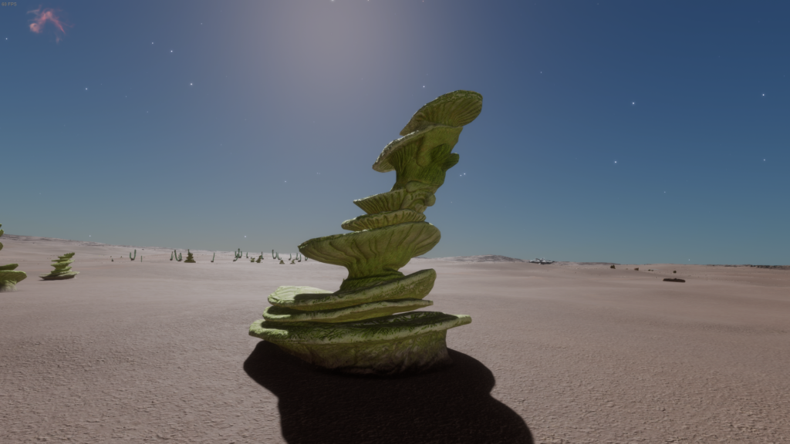
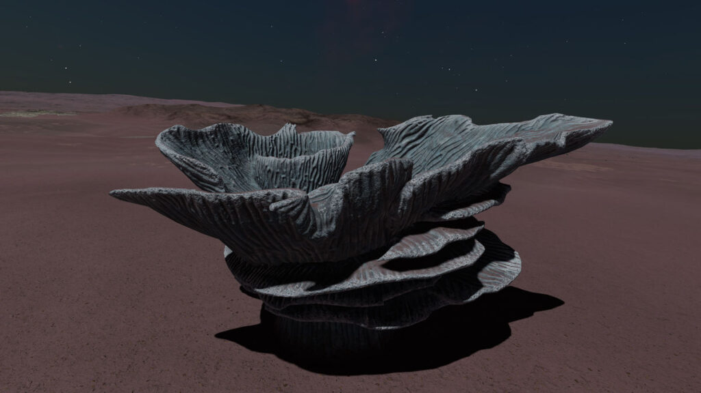
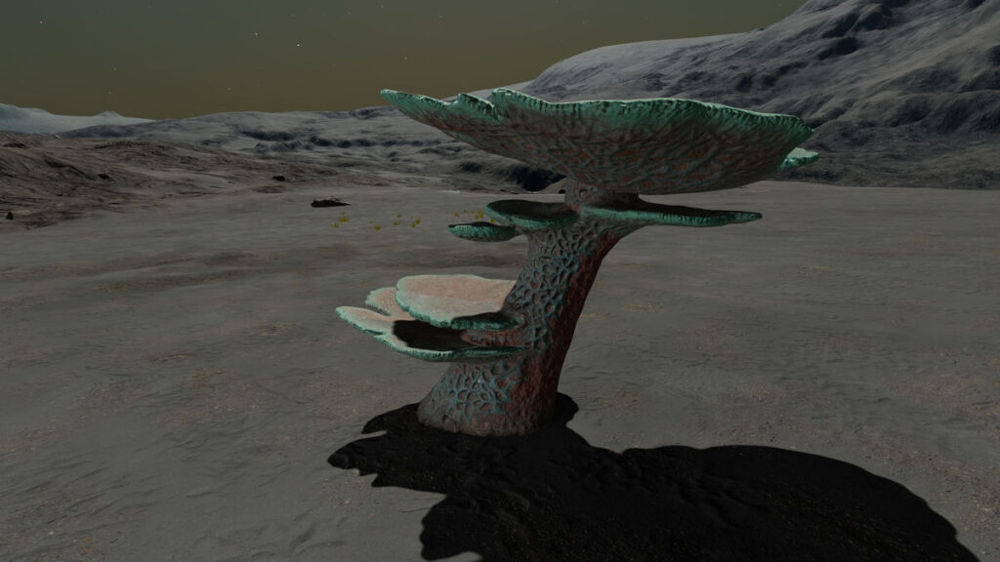
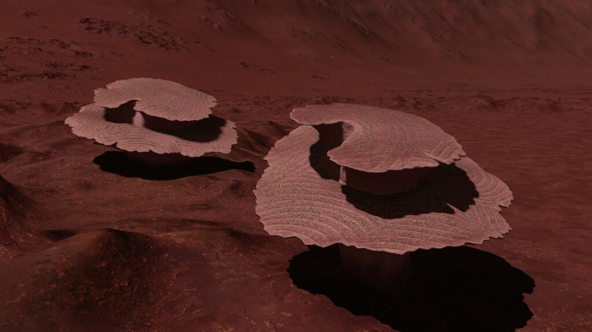
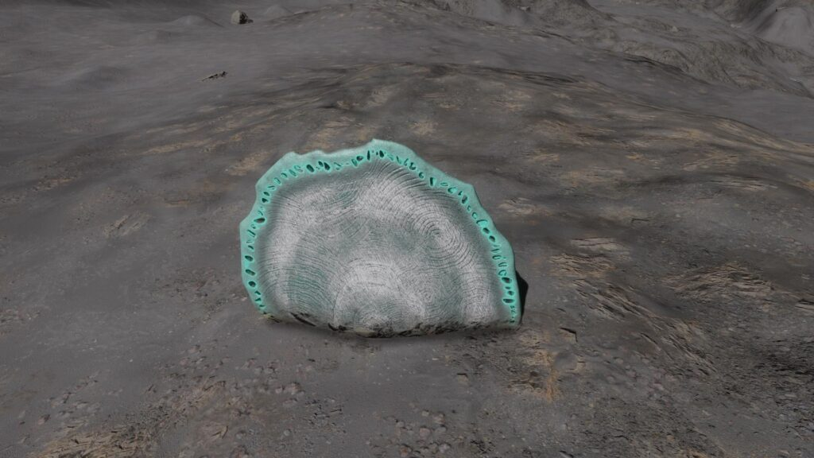

Stone Circles. Osseus Pumice – White. Image courtesy of Cmdr. Arras DeCairo
Slow-growing organisms that can be found exclusively on rocky areas of planets. They are defined by a symbiotic relationship that has evolved between two unicellular organisms. which are now inseparable. One cell type is solely responsible for energy production by either photosynthetic. chemosynthetic or thermosynthetic processes. The symbiotic cells harvest some of this energy, and in turn deposit a hard rock-like substance extracted from the local geology to create a rigid endoskeleton. This structure provides a solid base for the organism to exist. It features complex folds that help increase available surface area for metabolic interactions. Osseus have been observed to create callus-like cell coverings, and withdraw themselves into the endoskeleton for protection.
Osseus is one of the Genera with a dual variant determinant. The cross-Species rule for Stellar Class determinant holds true, i.e. Stellar Class X = Variant Colour Y across all Stellar Class determinant Species within the Genus.
For Stellar Class determinant Species in such Genera it is also possible to state generalised planetary body type and atmosphere preferences as these show a relatively limited set of values. The same is not true for the Material determinant Species. These show considerably more differentiation, to the extent that no generalisation will be made but each Material determinant Species treated individually.
Minimum Colonial Separation: 800m
| Species Name | Percentage of recorded Osseus Population | Vista Genomics Offer Price |
|---|---|---|
| Osseus Cornibus | 5.60% | 1,483,000 |
| Osseus Fractus | 16.15% | 4,027,800 |
| Osseus Pellebantus | 4.69% | 9,739,000 |
| Osseus Spiralis | 48.10% | 2,404,700 |
All data as at 30th September 3311.
For the most up-to-date statistics and Vista Genomics pricing, please visit:
Canonn Bioforge or the data-enriched Codex Regions.
Stellar Class and Variant
| Stellar Class | O | B | A | F | G | K | M | L | T | TTS | Ae | Y | W | D | N |
| Variant | Ye | Li | Tu | Gy | In | Em | Gr | Mr |
Planetary Body Type: High Metal Content or Rocky
Atmosphere: Ammonia or Carbon Dioxide
Gravity: Less than 0.29G

An Osseus Species that produces a stacked series of spiral structures up to about three metres in height. These ridged features are upturned to better absorb sunlight for photosynthesis.
Planetary Body Type: High Metal Content (27%), Rocky (73%)
Atmosphere: Carbon Dioxide
Volcanism: No Volcanism
Temperature Pressure Gravity
| Minimum | Average | Mode | Maximum | |
| Temperature (K) | 180.00 | 186.02 | 180.02 | 195.39 |
| Pressure (atm) | 0.025763644 | 0.063010258 | 0.040613227 | 0.098660550 |
| Gravity (G) | 0.04 | 0.19 | 0.19 | 0.27 |
Galactic Arm Preference: Perseus Arm including Ryker’s Hope and Galactic Centre

This Osseus Species can grow to over six metres across. They produce wide ridged frills for metabolic interactions including absorbing sunlight for energy production.
Planetary Body Type: High Metal Content (22%), Rocky (78%)
Atmosphere: Carbon Dioxide
Volcanism: No Volcanism
Temperature Pressure Gravity
| Minimum | Average | Mode | Maximum | |
| Temperature (K) | 158.67 | 184.21 | 181.00 | 190.00 |
| Pressure (atm) | 0.001215788 | 0.058720012 | 0.035192199 | 0.098687392 |
| Gravity (G) | 0.04 | 0.18 | 0.17 | 0.27 |
Galactic Arm Preference: NOT Perseus Arm but including Odin’s Hold and Empyrean Straits

A Species of Osseus with a single broad stalk from which extend wide circular structures, with the largest plate capping the top to maximise sunlight absorption.
Planetary Body Type: High Metal Content (28%), Rocky (72%)
Atmosphere: Carbon Dioxide
Volcanism: No Volcanism
Temperature Pressure Gravity
| Minimum | Average | Mode | Maximum | |
| Temperature (K) | 191.00 | 192.91 | 191.10 | 196.74 |
| Pressure (atm) | 0.058009027 | 0.080645917 | 0.069496881 | 0.098690014 |
| Gravity (G) | 0.04 | 0.21 | 0.21 | 0.27 |
Galactic Arm Preference: NOT Perseus Arm but including Odin’s Hold and Empyrean Straits

A Species of Osseus that produces coiling spiral structures up to six metres wide. There are ridged folds on their upturned surfaces designed to capture sunlight.
Planetary Body Type: High Metal Content (23%), Rocky (77%)
Atmosphere: Ammonia
Volcanism: Insignificant
Temperature Pressure Gravity
| Minimum | Average | Mode | Maximum | |
| Temperature (K) | 160.00 | 167.27 | 168.00 | 191.89 |
| Pressure (atm) | 0.000987030 | 0.002120056 | 0.000989116 | 0.069400815 |
| Gravity (G) | 0.04 | 0.18 | 0.14 | 0.28 |
Galactic Arm Preference: No Preference
| Species Name | Percentage of recorded Osseus Population | Vista Genomics Offer Price as at 31st March 3310 |
|---|---|---|
| Osseus Discus | 8.33% | 12,934,900 |
| Osseus Pumice | 16.86% | 3,156,300 |
All data as at 30th September 3311.
For the most up-to-date statistics and Vista Genomics pricing, please visit:
Canonn Bioforge or the data-enriched Codex Regions.

An Osseus Species that appears as half-buried discs with radial patterns, which may resemble natural rock formations from a distance. They absorb geothermal energy from below the surface as well as available heat sources above ground.
Material and Variant
| Material | Cadmium | Mercury | Molybdenum | Niobium | Tin | Tungsten |
| Variant | White | Lime | Peach | Aquamarine | Blue | Red |
Planetary Body Type: High Metal Content (14%), Rocky (85%) or Rocky Ice (1%)
Atmosphere: Ammonia (1%), Methane (5%), Water (93%) and Other Atmospheres (1%)
Volcanism: Low numbers existing on planets across a spectrum of Volcanic activity. Potentially indicates tolerance rather than preference.
Temperature Pressure Gravity
| Minimum | Average | Mode | Maximum | |
| Temperature (K) | 68.92 | 403.90 | 419.00 | 451.84 |
| Pressure (atm) | 0.001304349 | 0.079353805 | 0.068573559 | 0.098688606 |
| Gravity (G) | 0.03 | 0.05 | 0.05 | 0.27 |
Galactic Arm Preference: No Preference
An Osseus Species that grows a single thick stalk from which emerges a wide, broadly circular, pitted endoskeleton. This structure is designed to dramatically increase the surface area to volume of the organism, facilitating chemical capture and chemosynthesis on its catalytically active surface.
Material and Variant
| Material | Antimony | Polonium | Ruthenium | Technetium | Tellurium | Yttrium |
| Variant | White | Peach | Gold | Lime | Green | Yellow |
Planetary Body Type: High Metal Content (1%), Rocky (17%) or Rocky Ice (82%)
Atmosphere: Argon (76%), Methane (19%) or Nitrogen (5%)
Volcanism: Low numbers existing on planets across a spectrum of Volcanic activity. Potentially indicates tolerance rather than preference.
Temperature Pressure Gravity
| Minimum | Average | Mode | Maximum | |
| Temperature (K) | 42.76 | 80.74 | 71.00 | 133.08 |
| Pressure (atm) | 0.000987198 | 0.015505459 | 0.016304752 | 0.098668251 |
| Gravity (G) | 0.03 | 0.22 | 0.27 | 0.28 |
Galactic Arm Preference: No Preference
 |  |  |  |  |
 |  |  |  |  |
 |  |  |  |  |
 |  |